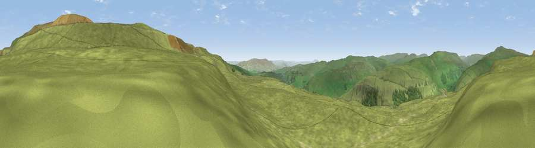

Viewpoint near Kettlewell
#12465 in England · top 22% of its area beats it · near KettlewellThe view, rendered

A 360° render of this exact spot computed from the terrain model, tree cover and land cover — summer colours, afternoon light, calibrated against photographs of famous viewpoints. Real trees, hedges and buildings will differ in detail.
The panorama
Grey silhouette: terrain skyline in each direction (720 bearings, Earth curvature and refraction included). Dashed green: skyline with trees (+15 m) and buildings (+8 m) as obstacles. Blue strip: how far the ground is visible on each bearing.
Where the view opens
Wedge length = distance to the farthest visible ground on that bearing (vegetation-aware). Rings at 10, 25 and 50 km.
What fills the view
97% grassland · 3% woodland
Angular shares of the visible panorama (visual magnitude), not map area. Landscape diversity 0.06 (0–1 Shannon).
Key numbers
More beautiful places nearby
The staircase of upgrades: each row has a higher view potential than everything closer. Driving times are estimates from straight-line distance, calibrated against real road routing — check an actual route before setting out.
| Place | Direction | Drive | Score |
|---|---|---|---|
| Viewpoint near Kettlewell | NNW · 1 km | ~2 min | 61.0 |
| Sweet Hill | NE · 2 km | ~5 min | 74.7 |
| Viewpoint near Kettlewell | NNE · 4 km | ~8 min | 75.6 |
| Viewpoint near Kettlewell | NNE · 5 km | ~11 min | 76.6 |
| Viewpoint near Buckden | NNW · 8 km | ~16 min | 77.3 |
| Viewpoint near East Witton | NE · 20 km | ~34 min | 77.8 |
| Little Ingleborough | W · 25 km | ~40 min | 78.8 |
| Viewpoint near Ingleton | W · 25 km | ~41 min | 79.5 |
54.13732, -2.01642 · source: screening · position refined by local search. Computed location — check access rights before visiting.